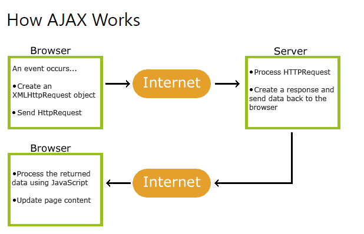

AJAX = Asynchronous JavaScript And XML.
AJAX is not a programming language.
AJAX just uses a combination of:
- A browser built-in XMLHttpRequest object (to request data from a web server)
- JavaScript and HTML DOM (to display or use the data)
AJAX is a misleading name. AJAX applications might use XML to transport data, but it is equally common to transport data as plain text or JSON text.
AJAX allows web pages to be updated asynchronously by exchanging data with a web server behind the scenes. This means that it is possible to update parts of a web page, without reloading the whole page.

- An event occurs in a web page (the page is loaded, a button is clicked)
- An XMLHttpRequest object is created by JavaScript
- The XMLHttpRequest object sends a request to a web server
- The server processes the request
- The server sends a response back to the web page
- The response is read by JavaScript
- Proper action (like page update) is performed by JavaScript